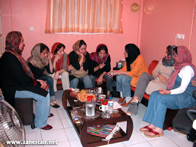
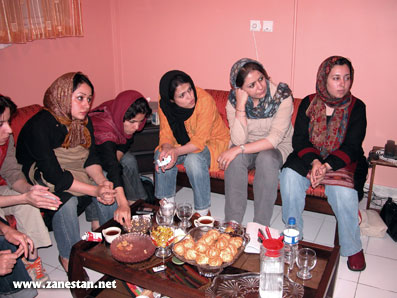
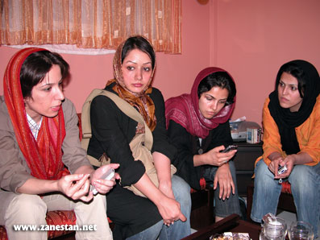

هفدهم مرداد ماه، روز خبرنگار، بهانه ای شد تا زنستانی ها با دیگر دوستان روزنامه نگارشان، به گفت و گو بنشینند. این نشست با هدف بررسی مشکلات روزنامه نگاران زن و به طور کلی مسائل مربوط به روزنامه نگاری زن صورت گرفت. مریم حسین خواه و پریسا کاکائی از طرف تحریریه ی زنستان، میزبانی را به عهده داشتند. شبنم رحمتی، ترانه بنی یعقوب، آمنه شیرافکن، فهیمه خضرحیدری و الناز انصاری نیز به عنوان میهمانان این نشست، تجارب خود را به اشتراک گذاشتند.

شبنم رحمتی، از سال 74 کار روزنامه نگاری را آغاز کرد و از سال 80 نیز فعالیت خود را در حوزه ی زنان ادامه داد. وی و دوستانش اولین مجله ی هفتگی زنانه به نام فکر روز را منتشر کردند که یکسال بیشتر دوام نداشت. چندی بعد مسوولیت صفحه ی زنان روزنامه ی بهار را عهده دار شد، این روزنامه بعد از چند شماره توقیف شد. وی همچنین در روزنامه ی یاس نو سری مصاحباتی در مورد زنان ارائه داد. پیش از توقیف مجدد روزنامه ی شرق، به عنوان معاون گروه اجتماعی فعالیت می کرد.
ترانه بنی یعقوب دو سال است کار روزنامه نگاری در حوزه ی زنان را شروع کرده است. در مجموع شش سال سابقه ی روزنامه نگاری دارد. وی فعالیت خود را را با نوشتن در مجله ی فرهنگ و پژوهش شروع کرد. روزنامه ی یاس نو، وقایع اتفاقیه، بعد از یک دوره وقفه نیز خبرگزاری کشاورزی از دیگر تجربیات وی است. در حال حاضر هم در روزنامه ی سرمایه به کار مشغول است.
آمنه شیرافکن، سال 79 همزمان با تحصیل در رشته ی ارتباطات، کار روزنامه نگاری را با روزنامه ی آفرینش آغاز کرد. مطالب وی بارها در خبرگزاری میراث، مجله ی زنان، سایت زنان ایران، و سایت اف تریبون مرکز فرهنگی زنان منتشر شده است. او همچنین از فعالیت در نشریات دانشجویی، مثل نشریه ی سحر که در حوزه ی زنان بود، غافل نشد و هم اکنون نیز در صفحه ی زنان روزنامه ی سرمایه و سایت کانون زنان ایرانی به کار روزنامه نگاری مشغول است.
فهمیه خضر حیدری از سال 78 کار را با مجله ی زنان شروع کرد. بیشترین فعالیتش در حوزه ی زنان در مجله بوده است. با روزنامه ی حیات نو نیز همکاری کرده و در حال حاضر در روزنامه ی اعتماد ملی مشغول به کار است.
الناز انصاری، در زمینه ی زنان و کودکان شش سال تجربه ی خبرنگاری دارد. روزنامه های صاحب قلم، اعتماد، فصلنامه ی فصل زنان، فکر روز از تجارب وی هستند.
• زنستان: چگونه وارد عرصه ی مطبوعات شدید و حساسیت جنسیتی در کارهایتان چگونه شکل گرفت؟
آ.ش: رشته ی من ارتباطات با گرایش روزنامه نگاری بود. قاعدتا کارم بر اساس همین رشته تعریف می شد و از ترم دوم شروع به کار کردم. در حقیقت انگیزه ی گرایش به روزنامه نگاری علاوه بر علاقه ی شخصی، رشته ی دانشگاهی ام بود. خیلی پیش از این، تقریبا از سال دوم راهنمایی، حساسیت جنسیتی برایم معنا پیدا کرد که بیشتر ریشه در فضای خانواده داشت. من فوتبال بازی می کردم و از یک سنی به بعد دیگر نمی توانستم در کوچه بازی کنم. پدرسالاری حاکم بر خانواده و بحث هایی که پیرو آن پیش می آمد نیز بی تاثیر نبود. به نظرم تجربه های زیستی هر شخصی، به نحوی در ادبیات و زبان نوشتاری وی فضایی برای نوشتن پیدا می کند. بعد از ورود به دانشگاه گرایشم برای کار روی این موضوع بیشتر شد. نشست هایی که با هم دانشگاهی ها داشتیم و یا فعالیت در نشریات داخلی، همه در راستای همین گرایش بود. وقتی هم امکان نوشتن پیش آمد، نوشتن پیرامون این موضوع را آغاز کردم. در حال حاضر هم فوق لیسانس مطالعات زنان می خوانم تا بتوانم ارتباط بیشتری برقرار کنم.
ف.خ: من در دانشکده ی ادبیات دانشگاه تهران درس می خواندم. ما در آن زمان نشریه ای برای انتشار داستان های دانش جویان منتشر کردیم و در این میان بیشتر زن ها همکاری می کردند. بعد هم نشریه به سمت فقط داستان های زنان تغییر جهت داد، به صورتی که دو هفته یک بار آن را منتشر می کردیم. به هر حال بعد از مدتی دانشگاه اجازه ی ادامه ی فعالیت نداد. از همان زمان می خواستم در همین زمینه کار کنم اما به بعد اجتماعی آن زیاد فکر نکرده بودم و بیشتر بعد ادبی مساله، داستان های ادبی زنان برایم مهم بود. پس از آن هم در دوران دانشجویی در پکا مشغول به کار شدم و طی همان دوران با یک سری کارشناس کتاب آشنا شدم و در این میان مجله ی زنان را هم مطالعه می کردم. یکی از این آقایان کارشناس کتاب که با مجله ی زنان هم در ارتباط بود به من پیشنهاد فعالیت در این مجله را داد. این آغاز ورود من به فضای مطبوعات بود. کارم را با بخش ادبی مجله ی زنان شروع کردم. بعد از ورود به آنجا ذهنیت جنسیتی و نگرش اجتماعی به مسائل زنان کم کم شکل گرفت.
ا.ا: پیش از آغاز فعالیت مطبوعاتی به صورت جدی، اولین مطلبم در مورد تجربه ی زندان و زندان زنان بود، جایی که برای این زنان پناهگاه بود. یک مطلب دیگر هم در مورد پخش فیلم هایی از زندگی خصوصی زن ها بود که حتی چند نفر از آنها خودکشی هم کرده بودند، و آن در قالب یادداشت برای فکرنو، ارسال کردم. همان مطلب باعث شد وارد این فضا شدم. در همان زمان هم در زنجان من درگیر مساله ای چادر بودم که از مقطع راهنمایی پوشیدن آن اجباری بود. در آن زمان هنرستان درس می خواندم، یک سال تصمیم گرفتم این پوشش را نپذیرم. از مهرماه این کار را شروع کردم و به تدریج این تمایل به دیگران نیز منتقل شد تا جایی که یک کلاس بیست نفره هیچ کدام چادر به سر نمی کردند. آن موقع هیچ انگیزه ی جنسیتی نداشتم. با پسرها بزرگ شده بودم و دغدغه های دخترانه خیلی برایم ملموس نبود. قضیه ی چادر منجر به اخراج من شد. در آن زمان یک سری نامه نوشتیم و برای نشریاتی که در زمینه ی حقوق زنان فعالیت می کردند ارسال کردیم. مجله ی حقوق زنان آن را چاپ کرد و دفتر خانم هاشمی نیز پی گیری کرد. یعنی آن اتفاق و مساله ی پوشش و اجبار مردانه ی پوشش بعدها برایم بعد جنسیتی پیدا کرد. دو سال بعد در یک هفته نامه ی محلی که خودمان آن را راه انداخته بودیم نوشتن در مورد فقر و آسیب های اجتماعی کودکان و زنان را آغاز کردم. اما بعد از شروع کار جدی در مطبوعات، بیشترین انگیزه برای نوشتن در مورد زنان این بود که در روزنامه ها موضوع زنان و نگاهی که به آن می شد کاملا مردانه و از بالا و تحقیرآمیز بود. هر گزارشی که در مورد زنان می خواندم به ذهنم می رسید که این خبرنگار نمی تواند خودش را در جای آن زن سوژه ی گزارش قرار دهد. یک جور چالش درونی بین خودم و سبک نگارش آن زمان به وجود آمد. البته هیچ وقت زنان حوزه ی تخصصی ام نبوده و همیشه کودکان نیز با این موضوع همراه بوده است.
ت.ب: من خیلی دید جنسیتی نداشتم تا اینکه در اولین جایی که آغاز به کار کردم مجله ی فرهنگ و پژوهش، سعی کردم با پژوهشگرهای زن صحبت کنم. صفحه ای داشتیم که به زنانی که در حوزه ی خود کارهای خاصی انجام می دادند، می پرداخت. این صفحه به من واگذار شد. از همان زمان یک سری حساسیت ها برایم ایجاد شد. ولی روزنامه های آن زمان صفحه ی خاصی برای زنان نداشتند. در وقایع اتفاقیه هم که در حوزه ی آسیب های اجتماعی و مساله ی ایدز کار می کردم باز مورد زنان مبتلا به ایدز این حساسیت ها را بیشتر کرد. اما شروع جدی بر روی موضوع زنان از همان زمان شکل گیری سایت کانون زنان ایرانی بود که در آنجا علایق و حساسیت هایی که طی این سال ها شکل گرفته بود، جدی و عملی شد. بیشتر دوست داشتم روی مساله ی زنان خارج از مرکز کار کنم. مشکلات زنان شهرستان ها. از آن زمان تا به امروز حوزه ی تخصصی ام زنان است.

ش.ر: سالهای آخر دبیرستان ما مصادف بود با انقلاب فرهنگی ایران در دهه ی شصت. ما خیلی دنبال این بودیم که چیزی بخوانیم و یاد بگیریم و متاسفانه چیزی منتشر نمی شد. زمانی که داشتم دیپلم می گرفتم خانم شرکت مجله ی زنان را منتشر کرد که دقیقا پاسخی بود به آن چیزی که نسل من در جستجوی آن بود و من واقعا خودم را مدیون خانم شرکت می دانم. از روزی که این مجله منتشر شد تصمیم گرفتم روزنامه نگار بشوم برای اینکه در حوزه ی زنان کار کنم. انگیزه ام این بود. بعد از ورود به دانشگاه، هم زمان شروع به کارورزی کردم. ولی روزنامه ی ایران خیلی مجالی برای طرح دغدغه ها نمی داد. به محض اینکه فرصتی پیدا شد شروع به نوشتن در حوزه ی زنان کردم چه در مجلات و چه در سایت هایی که از سال 79- 78 کم کم شکل گرفتند.
• زنستان: شما به عنوان روزنامه نگاران حوزه ی زنان، خودتان را فمینیست می دانید یا خیر؟
ش.ر: اگر فمینیست به معنای زنی ست که نسبت به تبعیض های جنسیتی در جامعه آگاهی دارد و برای کم کردن آن ها تلاش می کند و در حوزه ای که به کار مشغول است سعی در برجسته کردن این تبعیض ها دارد، بله من خودم را فمینیست می دانم. تعریف من از فمینیست زنی ست که زندگی خانوادگی دارد، مادر است از زندگی خانوادگی اش تا حد متعارف راضی ست. عاشق شده و از اینکه عاشق شده احساس خجالت نمی کند و در عین حال تلاش می کند که زنان به حقوق خود در جامعه دست پیدا کنند.
ا.ا: بله، من قطعا خودم را فمینیست می دانم. به نظرم برای فمینیسم خیلی نمی توان تعریف مشخصی ارائه داد. موضوع این است که تو وقتی دیدگاه جنسیتی داری و چیزی را با زاویه ی دید جنسیتی می توانی تحلیل کنی و این قابلیت را داری که بعد جنسیتی هر مقوله ی اجتماعی و یا سیاسی را ببینی حتی در همین حد هم فمینیست محسوب می شوی. چون آن دیدگاه تبعیض جنسی را به هر حال در همه چیز می توانی وارد کنی. خیلی از آدمها فمینیست هستند اما زیر بار آن نمی روند. بیشترین عاملی که مرا برای تاکید بر فمینیست بودنم قانع می کند این است که به نظرم هیچ چیزی وجود ندارد که نتوانم با دید جنسیتی به آن نگاه کنم. برای تحلیل هر اتفاق و مقوله ی اجتماعی که با آن مواجه می شوم ابتدا دو ظرف کلی دارم، یکی شکاف ها و اختلافات طبقاتی هست که می تواند منجر به یک سری پدیده ها بشود و یکی هم تبعیضات و شکاف جنسیتی است که وجود دارد.
ف.خ: ابتدا این نکته را یادآور شوم در بعضی مصاحبه ها که از افراد گرفته ام، حتی با وجود فعالیت در زمینه زنان، کلمه ی فمینیسم را به مثابه توهین تلقی کرده اند. می خواهم بگویم الزاما نباید از کسی که در این مورد فعالیت دارد بخواهیم خودش را فمینیست بداند. من خودم را بیشتر فعال در زمینه ی حقوق زنان می دانم. نه به این دلیل که فمینیسم را کلمه ی خوبی نمی دانم بلکه به نظرم پایه ی این تعاریف از اصل جامعه ی ما دور است بنابراین حداقل برای خودم حرف بزرگی به نظر می آید که از همه ی جهات خودم را فمینیست بدانم. با آن دیدگاه جنسیتی مورد بحث الناز و اینکه در تحلیل مسائل به آن شکاف های جنسیتی که سبب ساز خیلی مسائل است توجه شود کاملا موافقم اما نمی دانم آیا اسم این الزاما فمینیست بودن است؟ فکر می کنم فمینیست بودن تا حدی جامع الاطرافی بیشتری در مسائل زنان می طلبد که شاید خود من ندارم. در عین حال به مساله ی جنسیت در همه ی مسائل اطرافم توجه دارم. این پدیده می تواند پدیده ای به نام شهر یا خانواده، ازدواج، ازدواج موقت، بیماری و سایر مسائل باشد. جنسیت را در همه ی موارد مد نظر دارم. گاهی این شکاف جنسیتی چیزی را بر مساله اضافه می کند و تلاش می کنم با طرح دیدگاه و نوشتن، آن را نشان دهم، گاهی هم ممکن است مشکل خاصی را به وجود نیاورد اما به هر حال شکاف جنسیتی وجود داشته باشد چون همیشه هم نمی تواند عامل منفی باشد، در جایی صحبت از تبعیض مثبت هم می شود. از طرفی به نظرم فمینیست ها هم در نهایت جهان را انسانی تر می خواهند، یک فضای برابر هم برای زن ها و هم برای مردها. من هم از تفکر پلکانی برتری طلبانه دوری می کنم.
ت. ب: در ایران تعاریف با جاهای دیگر فرق دارد. من هم با تعریف موجود فمینیسم، فمینیست هستم اما در حقیقت با توجه به اینکه باید ابعاد آن بسیار گسترده باشد، فمینیست نیستم چون من فقط یک روزنامه نگارم که در واقع حساسیت های جنسی دارم و در این حوزه قلم می زنم اما به معنای تعریف جهانی فمینیسم، فمینیست نیستم.
ف.خ: از طرفی هم من نمونه هایی را در اطرافم می بینم به طور مثال، در تحریریه ی ما که به هر حال فضای فکری مان به هم نزدیک است، وقتی در مورد خانمی که مدال دو میدانی برده است، و به نظرم با آن شرایط سخت به مدال دست یافته است صحبت می کردم آقایان همکار به مسخره می گفتند شما فمینیست هستید. در حالی که هر کس کلمه ی زن را بیان می کند و راجع به برابری و ابتدایی ترین حقوق زن صحبت می کند الزاما فمینیست نیست. به نظرم اگر به بحث فمینیست بودن یا نبودن دامن زده شود، راه ارائه ی حرف کسی را هم که ممکن است از فمینیست ها هم خوشش نیاید و راجع به حقوق برابر انسان ها نظر مثبت داشته باشد، می بندیم.
• زنستان: به هر حال در زمینه های مختلف، نظریه های گوناگونی وجود دارد، و به طور مثال یک روان شناس الزاما تابع یک نظریه ی خاص نیست بلکه برآوردی از نظریه ها را در نظر می گیرد. در مورد فمنیست بودن هم آیا لزومی دارد به بعد نظریه های جهانی آن توجه کرد؟ هر کس نمی تواند در حوزه ی خودش این موضوع را مشخص کند؟
ف.خ: منظور من هم همین است. من در مورد مسائل زنان می نویسم و این دیدگاه را دارم اما آیا این به معنای فمینیسم است؟
ت.ب: الزاما فمینیست نباید اکتیویست باشد. برای من اگرچه بودن در این زیر مجموعه موجب خوشحالی هم هست اما به نظرم در معنای جهانی آن نمی گنجم.
• زنستان: به وجه دیگر این مساله بپردازیم که وقتی تعابیر غلطی از فمینیسم در جامعه وجود دارد یک روزنامه نگار که در حوزه ی زنان کار می کند می تواند آن را تعدیل کند.
آ.ش: من قطعا خودم را فمینیست می دانم. به نظرم درست است که فمینیسم از آن طرف آمده است اما قطعا می شود بومی سازی کرد. آدم های زیادی در این زمینه کار می کنند. خانم نجم عراقی و افرادی که در این حیطه کار می کنند اعتقاد دارند که باید بومی سازی شود و گرنه نمی شود به طور مثال رشته ی مطالعات زنان را در هاروارد خواند و بعد به ایران برگشت و خیلی خوب کار کرد چون اتفاقا بین رشته ای ست و در همین جا باید با آسیب ها و مسائل دیگر دست به گریبان باشند و زندگی کنند و بعد به تولید فکر برسند. به همین خاطر به طور مثال اگر ترانه روزنامه نگار است و دید جنسیتی دارد و می تواند هزینه کند 22 خرداد به خیابان برود، یا در راستای این بحث جنسیتی کنش اجتماعی داشته باشد قطعا او را فمینیست می دانم. فکر می کنم مفهموم فمینسیم انقدر گسترده نیست که بخواهیم به آن کد بدهیم. به طور مثال من بر اساس طیف فکری که دارم اگر بخواهم خیلی آکادمیک صحبت کنم، خودم را فمینیست لیبرال می دانم یا سوسیال. خودم در شاخه ای هستم که فمینیست های لیبرال تعریف می کنند و با همین واژگان اجتماعی و ادبیات اجتماعی اینجا این صحبت را می کنم. بنابراین خیلی گسترده اش نکنیم به نظرم همه ی ما هر یک کنشی داریم که بشود تحت عنوان فمینیسم قرار بگیریم. اما این قضیه که یک سری برچسب در حد دشنام به فمینست ها زده شده است، ببینید یک زمانی مثلا در سال 76 دشنامی که به خاتمی می دادند این بود که طرف لیبرال است. ما الان در مورد لیبرالیسم کتاب داریم که در مورد اقتصاددان های لیبرال بحث می کنند بنابراین این هم قطعا کم رنگ می شود. باید روزنامه نگارها یک سری کد بدهند یا این کدها وارد ادبیات ژورنال بشوند که در پس فمینیسم مفاهیم مثبت است. به طور مثال در مصاحبه ی اخیر با خانم کولایی، پرسش آخری که از وی داشتم این بود که آیا خودتان را فمینیسم می دانید و ایشان گفتند من از اینکه بگویم فمینیست هستم ابایی ندارم.
ا.ا: بحثی که ما در حال حاضر داریم در حقیقت بحث دیدگاه ها و برداشت های متفاوت از یک ایدئولوژی ست. فکر می کنم این امر کاملا طبیعی ست. هر مقوله ی وارداتی و نظری که وارد ایران شده معمولا چکیده ی آن پخش می شود. چون همه نمی خواهند وارد جزییات بشوند. مثلا زمزمه های اولیه در مورد مارکسیسم این بود که مارکسیست ها می خواهند ثروتمندها را بکشند و ثروتشان را بگیرند در حالی که این هزار و یک بحث دیگر دارد. در مورد فمینیسم هم وقتی در مورد برابری جنسیتی صحبت می شود همه ی آدمها با آن چیزی که در ذهنشان دارند آن یک جمله را تبیین می کنند. بنابراین همیشه رادیکال ترین برداشت ها حتی از محافظه کارانه ترین ایدئولوژی ها منتشر می شود و این دیگر برای انتشار نیازی به رسانه ندارد، دهان به دهان می چرخد. اولین بار که حدود ده یا پانزده سال پیش کلمه ی فمینیسم را شنیدم با یک برداشت خیلی سانتی مانتالی و با تصویر مردی در حال ظرف شویی همراه بود برای اینکه پدر من مردسالار بود و طبیعی ترین چیزی که توانستم آن لحظه برداشت کنم همین تصویر در مورد پدرم بود. این تصویری ست نشات گرفته از همان چکیده ی رادیکال هر چیز است. من شخصا همیشه تعمدا از فمینیست ها نام می برم. به طور مثال می گویم فمینیست ها را بازداشت کرده اند و همین به مرور ذهنیت را تغییر می دهد.
• زنستان: در صحبت های تان به نقش مهم روزنامه نگار در نوشتن در جهت جا انداختن این مساله اشاره کردید. به نظر می آید از کارهایی که می شود برای جا انداختن مفهوم حقوق زنان و فمینیسم کرد، در دو حوزه می شود به آن پرداخت یکی کار اجرایی و عملی ست و یکی حوزه ی نوشتاری. ما اینجا به عنوان کسانی هستیم که در این حوزه ی دوم فعالیت می کنیم. نقش خودتان را در این بخش چقدر می دانید و فکر می کنید که چه کارهایی باید انجام بدهید؟ چه کارهایی را می خواهید انجام بدهید و نمی توانید؟ عینی تر می شود به این موضوع پرداخت که در مورد موقعیت هر کدام تان در روزنامه صحبت کنید و اینکه برای نوشتن در این زمینه با چه موانعی رو به رو هستید؟
ت.ب: ما می خواستیم روی حقوق زنان کار کنیم. فکر می کردیم که باید الزاما با حقوقدانان مصاحبه کنیم و بعد بگوییم قوانین ایران چنین و چنان است و چاپ این مطالب برای روزنامه ی سرمایه سخت بود. چون روزنامه ی اقتصادی ست و عنوان صفحه ی زنان را به اقتصاد زنان تغییر دادند. بنابراین تصمیم گرفتیم به جای مستقیم پرداختن به قوانین، مصداقی پیش برویم به طور مثال به دادگاه خانواده برویم و از زنان مشکل دار آنجا یک گزارش تهیه کنیم. این راه خیلی بهتر بود. هم مطالب منتشر می شد هم محدودیت ها کمتر می شد. به نظرم در مورد فمینیسم هم باید کار کرد و به مردم و حتی همکارهای خودمان نشان دهیم که فمینیسم یعنی چه؟ مثلا در روزنامه ی ما همه مسخره می کنند و فکر می کنند معنای فمینیست بودن این است که مرد باید استثمار شود و زن سالاری باشد. بنابراین باید در این مورد هم نوشت و مصداقی عمل کرد. باز هم برای مثال همان سوالی که آمنه از خانم کولایی کرد در همین جهت بود که نشان دهد معنای فمینیسم آنچه در جامعه رایج است نیست.
• زنستان: یک ویژگی خاص روزنامه ی سرمایه در بین روزنامه های اصلاح طلب که به مسائل زنان هم نگاهی خوبی دارد، این است که هفته ای سه روز صفحه ی زنان دارد. ابتدا ظاهرا در همین روزنامه هم مخالفت هایی بوده و اینکه تحریریه معتقد بودند زن ها کاری می کنند که نان مردها هم آجر شود ولی بعد گویا اتفاقات دیگری افتاده است.
ت.ب: موضوع زنان موضوع حساسی ست. تحریریه می گفتند که ما دوست داریم روزنامه ی سرمایه باقی بماند. اصولا نفس انتشار روزنامه های تخصصی همین است که می خواهند باقی بمانند. در دنیا هم روزنامه ی تخصصی کم تر وجود دارد. در کشورهای اروپایی به آن صورت روزنامه ی اقتصادی یا ورزشی نیست. خیلی از افرادی هم که در این روزنامه کار می کنند به همین دلیل آن را انتخاب کرده اند. درست است که خیلی کمتر دیده می شوند قطعا روزنامه ی هم میهن بیشتر از سرمایه در معرض دید است زیرا به هر حال هم میهن روزنامه ی فراگیر اجتماعی و سیاسی ست. اما در سرمایه، ما کمتر دیده می شویم ولی در عوض می خواهیم بمانیم و شغل ماندگار داشته باشیم. صفحه ی زنان هم ابتدا یک روز در هفته بود و برای اینکه تبدیل به سه روز شود یک سری بحث و سخن داشت. به هر حال با تلاش های زیادی که شد از یک روز به سه روز در هفته رسید و با وجود سانسورهای زیاد ادامه پیدا کرد. به طور مثال راجع به خشونت زنان در ایران نمی توانیم بنویسیم اما در مورد خشونت علیه زنان در عراق می شود نوشت. در مورد خودسوزی زنان در هند می شود نوشت اما در ایران نه. یا در مورد فمینیسم یا هر ایسم دیگر نمی توانیم بنویسم. بنابراین باید کلمات جایگزین و بومی پیدا می کردیم.
ش.ر: در مورد تاثیر رسانه ها خیلی غلو نکنیم. واقعا اینکه فکر کنیم حرکتی را در روزنامه هایمان شروع کنیم و بعد این وارد جامعه می شود و مردم تاثیر می گیرند نه، در ایران این گونه نیست. در مورد خود، شغل و نقش اجتماعی مان دچار این توهم نباشیم. در بهترین حالت، روزنامه های ما چهل تا پنجاه هزار تیراژ دارند که بیست درصدشان بر می گردد. مردم هم همه ی روزنامه را نمی خوانند و صفحه ی اول یا حوادثش را می خوانند. متوجه باشیم که در چه متنی در حال بحث هستیم. درباره ی مشکلات مان در روزنامه نگاری، تجربه ی کاری من بعد از ده سال کار پیوسته نشان می دهد که درآوردن صفحه ی زنان یعنی فراری دادن مخاطب حرفه ای روزنامه. مشکل من در حال حاضر این نیست که به طور مثال به همسرم که روزنامه خوان حرفه ای ست بگویم که تو بیا نگاه کن زنان ما در دادگاه ها چه وضعیتی دارند و یا وضعیت ارث و شهادت چگونه است. من باید شاخک های او را حساس کنم به این که زنان در صفحه ی سیاسی به اندازه ی کافی دیده نمی شوند، به اندازه ی مردها به مجلس وارد نمی شوند. در صفحه ی ورزشی به اندازه ی مردها به زن ها فضا داده نشده و نمی توانند کار کنند و مدال بیاورند. در صفحه ی اقتصادی به اندازه ی مردها جا ندارند. تجربه ی شخصی نشان می دهند وقتی شما در یک روزنامه صفحه ی زنان دارید، مخاطب حرفه ای که به آن صفحه می رسد اگر حساسیت جنسی نداشته باشه صفحه را ورق می زند و برمی گردد. سه سال پیش بود به گمانم که قرار شد روزنامه ی جمهوریت منتشر شود، آقای باقی از من دعوت کرد که در آنجا صفحه ی زنان داشته باشم و من به ایشان گفتم به نظرم این کار اشتباهی ست. به نظرم این راه حل ما نیست و فکر می کنم در این مدت موفق نبوده است. باید بگردیم راه های جدیدتری پیدا کنیم. اگر دوستان ما، خودمان، فعالان جنبش زنان اشتباهی داشتیم، خودمان را اصلاح کنیم تا نگاه جامعه نسبت به حرکت ما کمی معتدل تر شود. به نظرم پرداختن به مسائل زنان در یک صفحه ی روزنامه هیچ دردی را دوا نمی کند و مخاطب را فراری می دهد. در روزنامه ی شرق، اعضای شورای سردبیری ما نه تنها هیچ انس و الفتی با مسائل زنان ندارند که از این مساله فراری هم هستند. بنابراین طبیعی ست که کار کردن در چنین حوزه ای کار سختی ست. دبیر سرویس ما هم حساسیت جنسیتی ندارد. او هم مثل من معتقد نیست که صفحه ی مستقلی به نام زنان داشته باشیم. ما بیشتر باید سیاست های جاری سازی جنسیتی را در سطح روزنامه جا بیاندازیم. روزنامه نگاران و خبرنگاران سیاسی، اقتصادی، ورزشی متوجه مسائل زنان باشند. نه اینکه یک خبرنگار حوزه ی زنان تعریف کنیم و یک صفحه ای در بیاوریم که هیچ خواننده ای جز ما آن را نخواند.
ا.ا: با صحبت های شبنم صد در صد موافقم. در نمونه کارهایی که در حوزه ی زنان از خود من چاپ شده، دقیقا متوجه شدم که چه تیپ کارهایی جواب می دهد. یک گزارشی در مورد مطب های پزشک زنان نوشتم که چند نفر را با هم ویزیت می کنند. در حالی که در مورد مثلا دندانپزشکی این گونه نیست ولی در مورد بیماری های زنان با آن تابوی شرمی که در ایرانی ها وجود دارد سه نفر با هم در اتاق هستند. یا در مورد مصاحبه، با فمینیست ها مصاحبه های زیادی گرفتم ولی فرضا مصاحبه با راننده اتوبوس زن بازخورد بیشتری داشت. بحث زنان را تا حدی باید از بحث تئوریک و آکادمیک جدا کنیم. خود من هم مطلب تئوریک فمینیستی را در روزنامه نمی خوانم آن مطلب را درکتاب می خوانم. ما در این راه چند معضل داریم که بهتر است این ها را بدانیم و بعد به سراغ موانع برویم. اگر یک حساب سرانگشتی از همه ی جاهایی که کار می کنیم داشته باشیم به غیر از مجله ی زنان، در روزنامه ی اعتماد همه ی دبیرها به غیر از من، مرد هستند. معمولا دبیرها در گروه اجتماعی مرد هستند. هیچ زنی را من به عنوان معاون سر دبیر نمی شناسم. سر دبیر زن نداریم. یعنی اکثر زن ها به فضای سایبر و یا نشریات تخصصی مثل زنان رانده شده اند. بنابراین ما در چنین محیط هایی کار می کنیم در ضمن اینکه پیش فرض تیراژ و مخاطب را هم در نظر بگیرید. نوشتن فمینیستی نمی تواند دغدغه ی ما باشد. دغدغه های ما در مطبوعات و مسائل ضد زن خیلی جزئی تر این ها است. همین که مثلا در یک مطلب بنویسیم فلان پزشک زن، نشان می دهد که در ناخودآگاه من، پزشک، مرد است مگر اینکه روی زن بودنش تاکید کنم. این را هم به خواننده منتقل می کنم. یکی از انتقادات من فرضا در اعتماد این بود که در صفحه ی یک، نود درصد اوقات، عکس ها به مردان تعلق دارد یعنی هیچ زنی هم سطح این مردان نداریم؟ فمینیست بودن ما نه به مخاطب ربط دارد و نه فضای مطبوعات پذیرای آن است. در مطبوعات و رسانه سلسله مراتب جنسیتی در اوج است. به نظرم در حال حاضر فمینیستی نوشتن در مطبوعات، فمینیسم را معرفی کردن نیست. برای نوآوری توجه به مسائل ریز لازم است. اگر موضوعمان شهری، سیاسی، اجتماعی، ایدز و یا هر چیز دیگر هست ما کارشناس زن داریم و باید با وجود همه ی موانع نظرات آنها را جویا شویم. با زنان آن حوزه ها مصاحبه کنیم. خواننده ای که به طور مثال در مورد ایدز می خواند و بنابر تابوهایی که دارد مطلب فمینیستی نمی خواند، در همین مطلب ایدز که با یک فوق تخصص زن مصاحبه شود غیرمستقیم آن تابو هم شکسته می شود.
• زنستان: کار دیگری هم که می شود کرد تخصصی شدن زنان روزنامه نگار در بخش های مختلف است. به طور مثال در صفحه ی اقتصاد یک روزنامه نگار چندین سال به مسائل اقتصادی زنان بپردازد و به مرور زمان در این زمینه صاحب نظر می شود.
ت.ب: به نظرم این یک امکان است. این مساله درست است و باید در صفحه ی سیاسی و یا اقتصادی هم مباحث مربوط به زنان مطرح شود اما صفحه ی زنان هم یک امکان است.
آ.ش: اینکه خبرنگار دید پیدا کند مهم است. طبق صحبت کوتاهی که با دکتر منصوره اتحادیه داشتم، ایشان می گفتند در غرب، زمانی جنبش زنان توانست از حالت الیت و نخبه در بیاید و با بدنه ارتباط بگیرد که به نگارش تاریخ شفاهی زنان بسیار معمولی پرداخت. تا وقتی که مثلا زندگی معمولی یک زن خانه دار یادداشت و آسیب شناسی نشود نمی شود مشخص کرد زن خانه دار و یا زنی که در شالیزار کار می کند چه مشکلاتی دارد. خرد نگاه کردن به سوژه های زنان چه به لحاظ بحث ژورنالیستی آن و چه تاریخ شفاهی خیلی کمک می کند. به نظرم درست است که مخاطب ما اندک است اما بیشتر خوانندگان همان کسانی هستند که نقش های کلیدی در جامعه دارند و همین دلیل می تواند تاثیرگذار باشد. اگر بخواهیم بحث زبان در ادبیات را در نظر بگیریم به هر حال نوشتن به شیوه ی روزنامه نگاری یک تغییر جهتی در زبان می دهد. شاید خیلی ایده آل باشد اما می شود در سطح کلان آن را در نظر گرفت. فرضا در مورد نقد عقل مذکر، اگر بخواهیم ادبیات را در نظر بگیریم ما عقل مذکر داریم در روزنامه نگاری هم ساختار مردانه قابل مشاهده است، بنابراین گفتمان زبان باید عوض شود و با همین تیراژ اندک هم می شود این زبان را عوض کرد.
• زنستان: بردن مسائل زنان به همه ی صفحات روزنامه، ایده آل است اما در فضای حاکم بر مطبوعات، این راه کار چقدر عملی ست؟ علاوه بر اینکه دبیر سرویس ها همه مردند و در هر سرویس چند خبرنگار زن وجود دارد؟ این خبرنگارها چقدر در حوزه های تاثیر گذار فعال هستند؟ وقتی این ایده عملی می شود که خبرنگارهای زن هم به اندازه ی مردها فرصت فعالیت و حضور داشته باشند و بتوانند کار کنند. به نظر می آید که حتی با وجود مردان روزنامه نگاری که دیدگاه جنسیتی دارند، تعداد انقدر نیست که از آن امکانی که صفحه ی زنان ایجاد می کند چشم پوشی کنیم. یعنی این صفحه می تواند به عنوان امکانی باشد که خلا را جبران کند تا وقتی که به آن ایده آل برسیم.

ف.خ: در مورد تجربه ی روزنامه ی خودمان، در اعتماد ملی، بعد از رفتن مریم حسین خواه، دیگر صفحه ی زنان نداریم. خودم چون در حوزه ی خبری کار می کنم، وقتی بتوانم کاری در این زمینه ارائه می دهم. اما به هر حال معتقد نیستم که عدم تاثیرگذاری زنان، محض است. ضمن اینکه به نظرم هدف ما از نوشتن و کار در رسانه ها صرفا تغییر رفتار دولت نیست. ما می خواهیم حیات اجتماعی جامعه را زنده نگه داریم و یک سری حساسیت ها را منتقل کنیم. ممکن است تاثیر زودهنگامی هم از آن نبینیم اما فکر می کنم موثر است. از یک طرف هم فکر می کنم آن صفحه ی زنانی که ما تا به امروز در روزنامه های مان تجربه کرده ایم آنقدر از دغدغه های زندگی گروه بزرگی از زنان دور بوده است که عملا فقط خود و دوستانمان آن را خوانده ایم. در شکل کلی تر، تقریبا در تمام صفحات همین کار را می کنیم. در مورد صفحه ی زنان فکر می کنم بودنش بهتر از نبودنش است و باید در شکل و محتوای آن صفحات تجدید نظر کنیم. دغدغه ی زندگی روزانه ی مردم در صفحات روزنامه و صفحه ی زنان به نمایش گذاشته نمی شود. خرده فرهنگ نخبه گرایی وجود دارد که مانع از این مساله می شود. در مورد حساس کردن سرویس های دیگر من می توانم از تجربه ی کاری خودم بگویم. دبیر سرویس ما نه تنها نگاه جنسیتی ندارد بلکه صد در صد مخالف است. یعنی ما پیش از چانه زنی با سردبیر باید از سد دبیر خودمان بگذریم. در عین حال ما بین دو سرویس ورزشی و حوادث هستیم. در سرویس ورزشی، با اینکه مردها هستند اما نسبت به هر اتفاقی که در حوزه ی ورزش زنان در سطح دنیا روی دهد حساس شده اند و آن را کار می کنند. این به نظرم تاثیر ما بر آنها و باعث خوشحالی ست. یا در صفحه ی حوادث، کلیشه های جنسیتی در مورد ادبیات روزنامه نگاری زیاد است مثلا مادرناتنی بی شرم و ... ما مدام در حال تذکر دادن هستیم و تاثیر هم دارد. به هر حال به نظرم علاوه بر همه ی این مسائل نیاز است که آسیب های کوچک و جزئی زندگی زنان نشان داده شود. یک نکته ی انتقادی هم که نقد از درون حساب می شود این است که ما روزنامه نگارهای زن همدیگر را به خوبی نمی شناسیم. در حالی که وقتی یک هدف را دنبال می کنیم باید با هم در ارتباط باشیم و به هم ایده بدهیم و حتی گاهی بر روی بعضی مباحث به صورت موج کار کنیم.
• زنستان: شما به عنوان روزنامه نگارهای زن که دغدغه ی جنسیتی دارید، چگونه با دیگر سرویس ها ارتباط می گیرید؟ چه دیالوگی را در پیش می گیرید؟
ف.خ: در این زمینه اگر اتفاقی نیافتاده ضعف خودمان هم بوده است. ما باید مثل امضا جمع کردن، برویم و با سرویس های دیگر، ارتباط برقرار کنیم.
ا.ا: ما که حساسیت های جنسیتی داریم بهتر است وقتی به یک خبری در مورد زنان دسترسی داریم اصل خبر را اگر در حوزه ی خودمان نیست به سرویس مربوطه بدهیم.
ت.ب: به نظر من هم می شود این خبرها را به سرویس های مربوطه پیشنهاد داد.
• زنستان: و پرسش آخر اینکه به عنوان زن، در حیطه ی کاری خود چقدر با محدودیت و تبعیض جنسیتی رو به رو بوده اید؟
ف.خ: ما به عنوان مثال نمی توانیم در تحریریه سیگار بکشیم اما مردها می توانند. در همشهری هم همین طور بود.
ت.ب: به نظرم ما بیشتر در فضای خبری مشکل داریم. مثلا در حوزه ی نیروی انتظامی، وقتی افراد را تحت عنوان اراذل و اوباش می گرفتند اصلا از زنها دعوت نمی کردند که خبر تهیه کنند. بچه ها بر خورد خوبی در حوزه ی نیروی انتظامی نمی بینند یا برای مانورهای جنگی به خبرنگاران زن اطلاع داده نمی شود.
ش.ر: من در شرق در گروه اجتماعی با این مشکل برخورد نکرده ام.
ا.ا: ببینید تفاوتی که من دیدم این است که مثلا وقتی دبیر سیاسی در مورد تیتری نظری دارد، فقط اعلام می کند که این تیتر خوب است اما من باید توضیح بدهم که به چه دلیل فلان تیتر را داشته باشیم. فرضا اگر بخواهم تیتر زنانه باشد باید توضیح بدهم که شاید سردبیر قانع شود و شاید هم نه. اما در مورد تیترهای مردانه این گونه نیست.
• زنستان: دوستان، از وقتی که در اختیار سایت زنستان گذاشتید سپاسگزاریم.